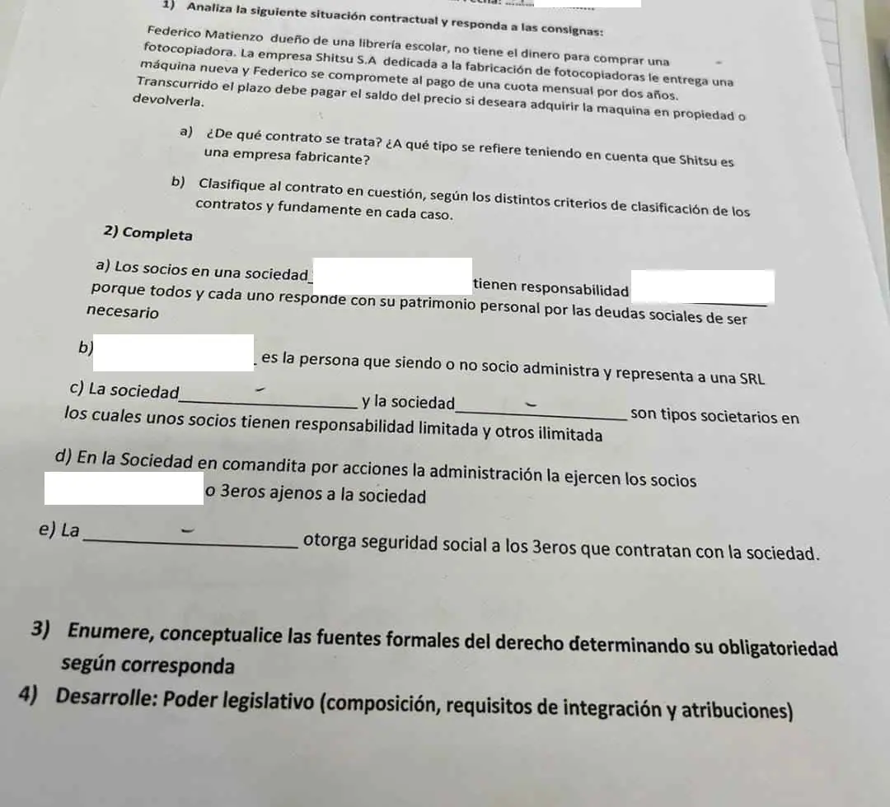

1° parcial, 02/07/2024 (unidades 1, 2 y 3)
1° parcial, 02/07/2024
Enunciado


Preguntas con opciones
Salen de este examen, adaptadas. Dejalas para el final, porque las opciones pueden dar pistas.
- 1
¿Cómo se renueva el Senado de la Nación?
Se tomó: 1° parcial 02/07/2024, adaptada
Los senadores duran 6 años y se renuevan por tercios. Los diputados duran 4 y se renuevan por mitades.
Propuesta de respuesta
Respuesta no verificada. La propuso Luta Studios con inteligencia artificial y ningún docente la revisó. Puede tener errores.
1) El caso de la fotocopiadora
a) Qué contrato es. Es un leasing. El dador, la fabricante Shitsu S.A., cede el uso y goce de la máquina al tomador, el dueño de la librería, a cambio de un canon, la cuota mensual durante dos años. Al final el tomador tiene la opción de compra, pagar el saldo del precio, o devuelve la máquina.
Es un leasing operativo. En esa modalidad el dador no solo financia al tomador, también le provee el bien, y Shitsu es la que fabrica la fotocopiadora. Si fuera financiero, una sociedad financiera le compraría la máquina a un fabricante o proveedor para darla en leasing, con una intermediación financiera.
b) Clasificación, criterio por criterio.
| Criterio | Es | Por qué |
|---|---|---|
| Obligaciones | Bilateral | Hay obligaciones para las dos partes. Shitsu entrega la máquina y cede su uso y goce, y el tomador paga las cuotas y al final la compra o la devuelve |
| Prestación | Oneroso | La cuota tiene su razón de ser en el uso de la máquina, y la entrega de la máquina en las cuotas |
| Perfeccionamiento | Consensual | Se forma por el mero consentimiento. La entrega de la máquina es cumplimiento del contrato, no lo que lo hace nacer, como en los reales |
| Ventajas | Conmutativo | Lo que cada parte da y recibe está determinado al celebrarlo, una cuota mensual por dos años y el saldo del precio. No depende de un hecho incierto |
| Forma | No formal, con lo que dice el caso | El caso no exige ninguna forma y el material no trae una forma obligatoria para el leasing |
| Efectos | Ejecución inmediata | Empieza a cumplirse al celebrarlo, con la entrega de la máquina y las primeras cuotas |
| Cumplimiento | Tracto sucesivo | Las cuotas se pagan mes a mes durante dos años, como en la locación de cosa |
| Dependencia | Principal | No depende de otro contrato |
| Regulación | Típico o nominado | Tiene régimen propio en el Código |
Por su función económica es de cambio, que es la función principal del leasing operativo.
2) Completar
- a) Los socios en una sociedad colectiva tienen responsabilidad ilimitada, subsidiaria y solidaria porque todos y cada uno responde con su patrimonio personal por las deudas sociales de ser necesario.
- b) El gerente es la persona que siendo o no socio administra y representa a una SRL.
- c) La sociedad en comandita simple y la sociedad en comandita por acciones son tipos societarios en los cuales unos socios tienen responsabilidad limitada y otros ilimitada.
- d) En la sociedad en comandita por acciones la administración la ejercen los socios comanditados o terceros ajenos a la sociedad.
- e) La tipicidad otorga seguridad social a los terceros que contratan con la sociedad. Así lo dice la hoja, y se entiende como seguridad jurídica.
En e), adoptar uno de los tipos de la ley define cómo responden los socios, y así el que contrata con la sociedad sabe contra quién puede ir y hasta dónde.
3) Fuentes formales del derecho
Las fuentes formales son el modo en que la norma se manifiesta o exterioriza. Son cuatro, más una complementaria.
| Fuente | Qué es | Obligatoriedad |
|---|---|---|
| Ley | Norma jurídica general y abstracta establecida por escrito por el legislador. Es la fuente más importante del derecho argentino, pero no la única | Obliga. Entra en vigencia a los 8 días de su publicación en el Boletín Oficial, salvo que fije otra fecha, y nadie puede alegar ignorancia de la ley |
| Costumbre | Modelo de conducta observado reiteradamente en una comunidad, con el deseo de que sea observado en lo sucesivo. Tiene un elemento material, la conducta reiterada, y uno subjetivo, la convicción de que es obligatoria | Desde la ley 17.711, los usos y costumbres crean derecho si las leyes se refieren a ellos o en situaciones no regladas legalmente. Puede ser según la ley, al margen de la ley o contra la ley |
| Jurisprudencia | Los criterios que establecen los jueces y tribunales al interpretar y aplicar el derecho a los litigios | En principio los precedentes no son vinculantes para el juez a la hora de fallar. Para uniformarla existen los tribunales plenarios o el recurso extraordinario |
| Doctrina | La opinión de los tratadistas y estudiosos del derecho | No tiene carácter vinculante, aunque influye |
Los principios generales del derecho son una fuente complementaria, para cuando una cuestión no se resuelve por la ley ni por leyes análogas.
4) Poder Legislativo
Composición. Lo ejerce el Congreso de la Nación, bicameral, y su función es elaborar y sancionar leyes. La Cámara de Diputados representa al pueblo y tiene 257 miembros, uno cada 33.000 habitantes, que se ajusta por censo. El Senado representa a las provincias y a la CABA, con 72 senadores, tres por provincia y tres por la CABA. El vicepresidente preside el Senado y vota solo en caso de empate.
Requisitos de integración.
| Diputados | Senadores | |
|---|---|---|
| Edad | 25 años | 30 años |
| Ciudadanía | 4 años | 6 años |
| Mandato | 4 años, reelegibles | 6 años, reelegibles indefinidamente |
| Renovación | Por mitades cada 2 años | Por tercios cada 2 años |
Los dos tienen que ser naturales de la provincia que los elige o tener 2 años de residencia inmediata en ella. El Senado pide además una renta de 2.000 pesos fuertes (art. 55), que hoy no se aplica.
Atribuciones, según la clasificación de Dromi que trae el apunte.
- Legislativas. Derechos de importación y exportación, contribuciones, navegación, moneda, códigos de fondo (civil, comercial, penal, minería, trabajo y seguridad social) y lo conducente al desarrollo humano y a la educación (art. 75).
- De administración. Reglamento de cada cámara, tierras de propiedad nacional, pueblos indígenas y tribunales inferiores a la Corte.
- De gobierno. Estado de sitio e intervención federal, o aprobar o revocar lo que hizo el Ejecutivo durante el receso.
- De control. Diputados acusa (art. 53) y el Senado juzga (arts. 59 y 60) en el juicio político. También interpelación a los ministros e informes del Jefe de Gabinete.
Respuesta no verificada. Puede tener errores.
Se armó con la página del 1° parcial de la materia (Fuentes del derecho, Poder Legislativo, Clasificación de los contratos, Leasing, Sociedades y Tipos de sociedades), que sigue el apunte «Ciclo introductorio», el apunte escaneado Clasificación de contratos, las diapositivas de leasing y de sociedades y el apunte Tipos de sociedades de la cátedra.
Quedó en duda: La hoja tapa las respuestas de un alumno y la fecha a mano no se lee bien. En 1b el material no dice qué forma exige el leasing ni si es consensual, así que esas dos filas siguen los criterios del apunte, que es anterior al Código de 2015. En 2e la hoja dice «seguridad social», que parece ser seguridad jurídica, y el material no dice qué la otorga. Se propuso la tipicidad, pero puede ser otra cosa. En 2c también encaja la sociedad de capital e industria, aunque ahí el industrial responde hasta las ganancias no percibidas. La fila de la costumbre y la ley 17.711 salen del apunte de la unidad 1, también anterior al Código de 2015. Que el leasing tenga régimen en el Código sale de un resumen de alumnos de 2026 armado con IA.
¿Cómo te fue?
Marcá cada tema del examen. Las preguntas con opciones ya se corrigieron solas.
- ContratosEl contrato y sus elementos, en 1° parcial
- SociedadesSociedades, en 1° parcial
- Fuentes del derechoFuentes del derecho, en 1° parcial
- Poder LegislativoPoder Legislativo, en 1° parcial